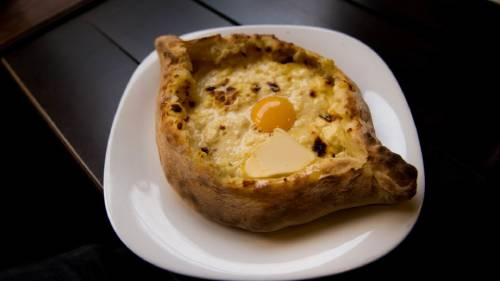

Georgian Cheese Bread Recipe

xhachapuri (хачапури) is a Georgian bread stuffed with a specific melting cheese known as sulguni from the Samegrelo region of the Republic of Georgia, a country situated in Eurasia at the crossroads of Eastern Europe and West Asia between Russia and Turkey.
Ingredients
1 cup (200 milliliters) warm water
1 tablespoon active dry yeast, or instant yeast
2.5 pounds (1.15 kilograms) all-purpose flour
1 cup (200 milliliters) warm milk
1.7 ounces (50 milliliters) olive oil
1 large egg
1 teaspoon sugar
1 teaspoon fine salt
1 cup (200 milliliters) additional warm water as needed
7 ounces (200 grams) sulguni cheese, grated
3 large eggs, divided
1 tablespoon (20 grams) butter, optional
A large pat of butter, optional, for serving
instructions
- The Spruce / Cara Cormack
In a small bowl, combine warm water with yeast and set aside.
- water and yeast in a bowl
The Spruce / Cara Cormack
In a large bowl or stand mixer, mix together flour with milk, oil, egg, sugar, salt, and yeast-water mixture. Knead by hand or with a dough hook until dough forms a smooth, elastic dough. (You may need up to 1 cup additional warm water.)
- dough in a bowl
The Spruce / Cara Cormack
Cover bowl with greased plastic wrap and let rise in a warm place for 2 hours.
- dough in a bowl, covered with plastic
The Spruce / Cara Cormack
Punch down dough and divide into three pieces. Cover with greased plastic wrap and let rest 15 minutes before shaping.
- dough balls on a wood cutting board, covered with plastic
The Spruce / Cara Cormack
To Make the Cheese Filling
Gather the ingredients.
- cheese filling ingredients
The Spruce / Cara Cormack
In a medium bowl, combine grated cheese, 1 egg, and butter, if using. Separate one egg, retaining egg yolk and saving white for another use. Fork blend egg yolk and set aside.
- cheese filling in a bowl
The Spruce / Cara Cormack
To Assemble the Acharuli Khachapuri
Heat oven to 400 F. Roll each of the dough balls and form into a boat shape.
- formed Khachapuri dough on a cutting board
The Spruce / Cara Cormack
Place equal portions of cheese filling in center of each of the 3 dough boats. Fold sides and ends of dough as shown in picture.
- cheese filling in the Khachapuri dough boats
The Spruce / Cara Cormack
Place khachapuri on a parchment-lined rimmed baking sheet (to catch any butter or melting cheese) and bake for 12 minutes.
- Khachapuri dough boats with cheese filling on baking sheets
The Spruce / Cara Cormack
Take khachapuri out of oven and brush dough (not cheese) with reserved beaten egg yolk. Crack last egg in the center of cheese.
- Khachapuri dough brushed with egg yolk, egg on top of Khachapuri cheese filling
The Spruce / Cara Cormack
Return to oven and bake for 3 minutes or until the yolk is still wobbly and white hasn't totally set. Serve immediately with a large pat of butter.
Nutrition Facts (per serving)
468 Calories
11g Fat
74g Carbs
17g Protein
Home page